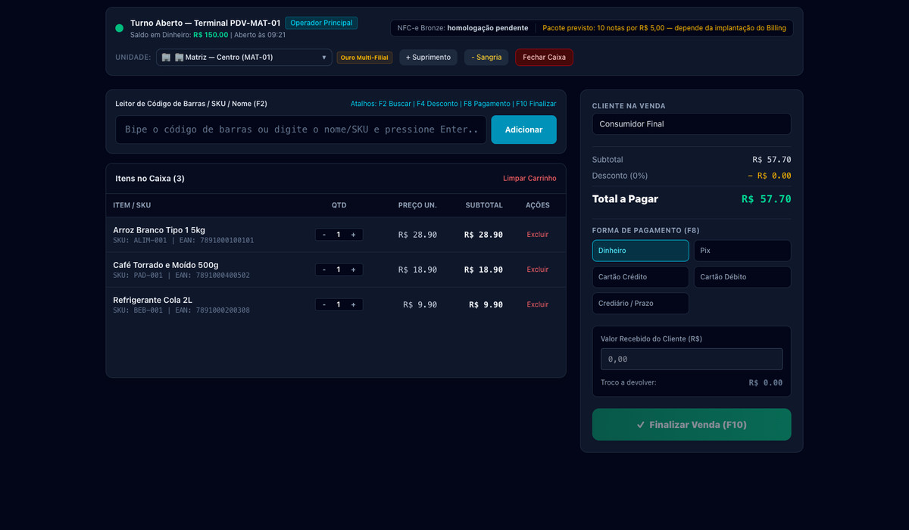

Implementado · Soft-launch não fiscal em implantação
Sysotto Commerce V2
Case da Trilha 2 sobre Sysotto.Web e Sysotto.Api, com PDV, estoque multi-filial e conciliação bancária.
Na Sysotto Softwares, desenvolvo sites autorais, sistemas modulares e projetos corporativos sob medida. Aplico mais de 20 anos de gestão executiva (Gerdau, CSN, Servisan) à engenharia de software para operações críticas.

Seleção de cases e projetos de engenharia de software, design de produto, inteligência artificial e desenvolvimento full-stack.
Case da Trilha 2 sobre Sysotto.Web e Sysotto.Api, com PDV, estoque multi-filial e conciliação bancária.

Demonstração técnica de comandas e cozinha em tempo real, com agente desktop em .NET 10 para impressão térmica direta (ESC/POS).
Arquitetura de microsserviços distribuídos em C# / .NET, abordando catálogo de produtos, carrinho de compras, orquestração de pedidos, mensageria assíncrona com RabbitMQ, padrões de resiliência e desacoplamento de serviços.
Aplicação em Java 17 e Spring Boot 3 desenvolvida no programa Oracle Next Education. Consome a API pública Gutendex, processa dados JSON complexos via Jackson e realiza consultas relacionais em PostgreSQL com Spring Data JPA.
Solução em Python aplicando Processamento de Linguagem Natural (PLN) e aprendizado supervisionado para triagem de caixas de mensagens corporativas, detecção de sentimentos e categorização de chamados.
Modelo comercial vigente, Commerce V2 em implantação e engenharia da plataforma compartilhada.
O ADR 008 formalizou a atuação da Sysotto como software house modular em três trilhas.
Componentes de edição web, estoque industrial e operação de salão e cozinha são reutilizados em projetos sob medida, junto aos módulos compartilhados de vendas, estoque, financeiro e fiscal.

Módulo da Trilha 2 para operações de varejo multi-filial no portal Sysotto.Web, com ativação por contrato.
A V2 reúne PDV de balcão, curva ABC de produtos e conciliação bancária com arquivos OFX e CSV.
A integração fiscal com Dados Jah está implementada. A emissão real de NFC-e e NF-e em produção depende da homologação com emitente autorizado e certificado A1.

Referência interna para sites autorais e catálogos B2B desenvolvidos sob contrato.
Núcleo compartilhado da Trilha 2 para identidade, isolamento de dados e controle de acesso.
Outras iniciativas técnicas do ecossistema incluem Sysotto.VoIP e SecHub.
Blocos de gestão fabril e de estoque, com demonstração privada para projetos industriais sob medida.
Referência interna de experiência e módulos de salão, cozinha e impressão para projetos gastronômicos sob medida.
Sites autorais, sistemas modulares e projetos exclusivos com implantação por contrato.
Sites institucionais, landing pages e catálogos B2B com design próprio para cada cliente.
Sistemas sobre o portal unificado Sysotto.Web e o núcleo Sysotto.Api, com extensões reaproveitáveis conforme a operação de cada cliente.
Projetos enterprise com aplicação ou infraestrutura dedicada quando o contrato exigir, além de consultoria e sustentação de sistemas personalizados.
Escopo, prazos e condições são definidos na proposta para cada cliente.
Construí uma carreira de mais de 20 anos como Gerente Geral e Gerente Comercial em grandes operações industriais e logísticas, incluindo Gerdau S/A (gestão de filial com crescimento superior a 30% a.a.), CSN, Servisan e Servicon. Essa vivência me confere domínio prático de processos de negócio, liderança de equipes e tomada de decisão orientada a resultados.
Na transição para a tecnologia, uni essa bagagem executiva à computação aplicada. Como CEO e Arquiteto de Soluções na Sysotto Softwares, projeto e implemento plataformas SaaS multi-tenant e sistemas corporativos, com foco em arquiteturas escaláveis (.NET, C#, PostgreSQL e Next.js), segurança e confiabilidade operacional.
Sou graduando em Engenharia de Software (UNIFBV/Wyden), com MBA em Gestão Empresarial pela FGV e Bacharelado em Turismo pela UNIFOR, mantendo dedicação contínua aos fundamentos da computação, estruturas de dados, sistemas distribuídos e segurança defensiva.
Capacidade comprovada de traduzir requisitos complexos de mercado em arquiteturas técnicas escaláveis e lucrativas.
Experiência sólida na coordenação de equipes multidisciplinares, alinhando objetivos estratégicos a metas operacionais.
Práticas rigorosas de arquitetura limpa, testes automatizados, segurança fail-closed e isolamento multi-tenant.
Liderança técnica na Sysotto Softwares, com sites autorais, sistemas modulares sobre Sysotto.Web e Sysotto.Api e projetos sob medida em .NET e Next.js.
Gestão comercial de energia solar e infraestrutura nos estados de PI e MA; administração contábil e financeira.
Responsável por operação de grande porte em terceirização, prospecção e retenção de contratos corporativos e públicos de alto valor.
Gestão de vendas industriais corporativas e logística de downstream no Ceará, Piauí e Maranhão.
Liderança do principal centro de distribuição regional da Gerdau. Crescimento superior a 30% ao ano no volume e alta rentabilidade.
Arquitetura técnica e visão executiva aplicadas a diferentes portes, necessidades operacionais e mercados.
Modelagem de fluxos operacionais de alta complexidade, integração entre gestão executiva e chão de fábrica, auditoria contínua de processos e conformidade regulatória corporativa.
Automação de operações comerciais e de atendimento, eliminação de intermediários tecnológicos de alto custo, estabilidade operacional e foco direto em redução de custos operacionais.
Concepção de produtos escaláveis com isolamento rigoroso entre clientes, governança multi-tenant, estratégias modernas de provisionamento e visão orientada a retenção e ROI.
Classificação transparente do ecossistema tecnológico com base no grau de profundidade e aplicação prática.
Tecnologias usadas na plataforma modular Sysotto.Web e Sysotto.Api, incluindo o Sysotto Commerce.
Linguagens, frameworks e ferramentas validados em projetos com código-fonte no repositório, simulações acadêmicas e hackathons.
Áreas de dedicação contínua em engenharia de sistemas, programação de baixo nível, controle de memória e segurança.
Compromisso com o aprendizado contínuo, fundamentos da computação e especializações de classe mundial.
Fundamentos de computação, engenharia de requisitos, arquitetura de software, algoritmos, governança de TI e segurança.
Planejamento estratégico, finanças corporativas, liderança de equipes de alto desempenho e inteligência de mercado.
Gestão de serviços, relacionamento interpessoal, comunicação executiva e dinâmica de mercado.
C, memória e ponteiros, algoritmos de busca e ordenação, estruturas de dados, Python, SQL, Flask e ética na computação.
Java Orientado a Objetos, Spring Boot 3, APIs REST, Banco de Dados, Metodologias Ágeis, IA Generativa e Hackathon final.
Badge oficial OCI Foundations Associate: arquitetura em nuvem, computação elástica, storage e redes seguras.
Segurança de redes, configuração de firewalls ASA, criptografia aplicada, VPNs site-to-site e mitigação de vulnerabilidades.
Monitoramento de tráfego com Wireshark, políticas de controle de acesso (ACLs), AAA, TACACS+/RADIUS e análise de ameaças.
Administração de sistemas Linux, automação em linha de comando, permissões e gerenciamento de arquivos e processos.
Formação completa em Nivelamento e Básico: fundamentos de segurança da informação, criptografia, redes e GRC.
Liderança técnica (Turma 13), Santander Bootcamp (Java Back-end), WEX End-to-End (.NET) e Suzano AI Developer.
Análise de dados, visualização, modelos preditivos e fundamentos de ciência de dados corporativa.
Otto, na Gerência Geral da Base de Teresina PI do Grupo SERVI-SAN desempenhou suas funções de forma otimizada gerando valores significativos para a Organização Empresarial. É dinâmico, tem excelente relacionamento interpessoal e busca sempre resultados.
Aberto a oportunidades profissionais, contratação corporativa de soluções Sysotto e parcerias estratégicas.
Envie sua solicitação por e-mail.